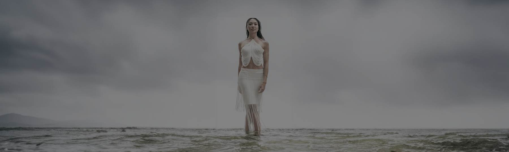

I see who you are before you can say it. Then I make sure everyone else sees it too.
Dauss Miller, co-founder and creative director
I was the quiet kid. My mom kept telling me to speak up. I stood at the back of the room and watched: who was comfortable, who was performing, who was hurting, who wanted to be noticed and who didn't.
Photography gave me an instrument for it, and I've had a camera in my hands for almost three decades. Weddings taught me to earn trust fast in rooms I didn't control. Campaigns for brands like Target, Google and Adobe taught me what an image has to do when a team and a budget are riding on it.
The third thing took me longer to say out loud. I feel people. I can tell when someone gives me the answer they've learned to give. And I can tell the moment the real person shows up. It's usually about three seconds after they think the photo is done.
I believe something in each of us already knows who we are. My job is to see it, say it back, and make sure everyone else sees it too.
Home is Austin, and a house full of kids.
Why Planet Ü
A whole world built around one person.
There's a universe inside each of us: your experiences, your gifts, your contradictions. Planet Ü is a place where that gets recognized and given room to grow.
The Ü is you, at the center of it. And yes, people say "ooh" when they hear it.
Moe. In 2018 we met a real black sheep in Iceland. He's been our mascot ever since, for everyone who wandered from the herd and built something of their own.

What we won't do
It says as much about us as the work.
- Build an image someone hasn't earned. No invented credentials, no borrowed authority.
- Help anyone use their brand to manipulate people.
- Take work from companies whose products we wouldn't give our own kids.
- Trade our families for a deadline.
The team
A small team, all over the world.
Web and motion design in the US and Asia, graphic design in Nigeria, operations in Missouri and the Philippines, and the Ads Hauss team in New York. Behind every engagement is the whole house: photography, film, ads, social, web and media.
One day there'll be a campus with studios, a treehouse office, a café and kids working on real creative projects. First, the work.